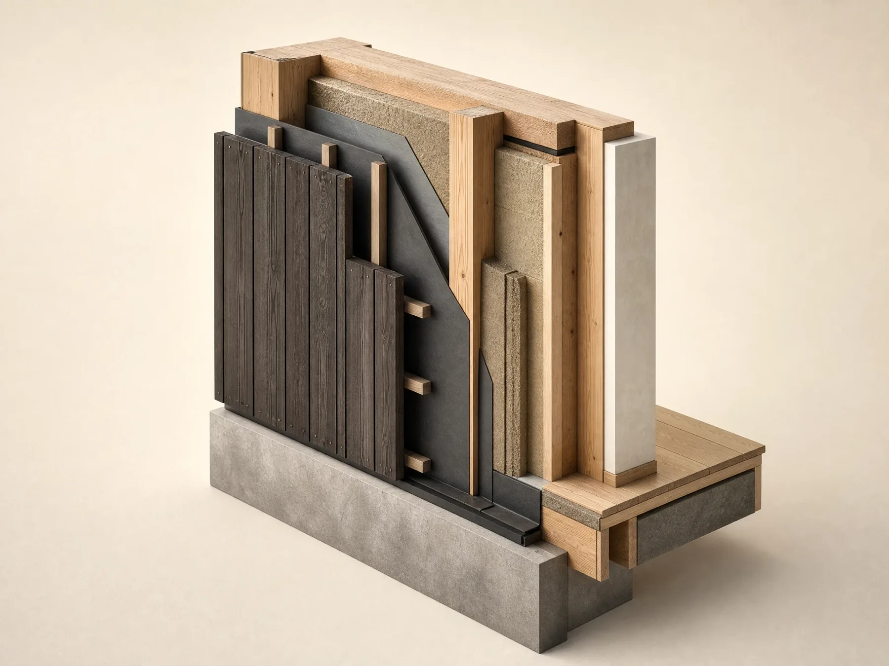

Студія каркасної архітектури / Київ
Один партнер.
Дім під ключ
Furlund проєктує, інженерно розраховує і будує каркасний дім як єдину систему — один партнер від першого ескізу до передачі ключів, без розриву між архітектором, інженером і будівельною бригадою
- 24–48 тижнів від ескізу до ключів
- Один договір, без субпідрядників
- Кожен вузол — з інженерним розрахунком
Маніфест
Дім — це не оболонка для меблів. Це структура, яка вирішує, як входить світло, як рухається звук і як насправді минає недільний ранок родини

Вид зсередини
Ліс не за вікном — ліс у кімнаті
Скло від підлоги до стелі стоїть там, де дерева найближче. Решта стін — глухі, тому кімната лишається кімнатою, а не вітриною

Флагманський проєкт
Бурштинова галявина
П'ять каркасних об'ємів, прошитих через сосновий ліс дерев'яним настилом. Кожен має одну функцію — сон, роботу або просто тишу — і повернутий до дерев, а не один до одного

Система
Одна стіна.
Сім рішень
Каркас Furlund — це не один матеріал, що вдає з себе будинок. Це шари: структура, утеплення, контроль вологи, обшивка — кожен виконує одну задачу, у правильному порядку
Структурний каркас
Інженерний брус тримає навантаження і задає геометрію ще до того, як додається все інше
Утеплювальний контур
Безперервний тепловий шар обгортає каркас без розривів у вузлах — саме там, де найчастіше втрачається тепло
Пароізоляція й вітрозахист
Герметизує оболонку будинку, щоб повітрообмін контролювала вентиляція, а не випадкові щілини
Обшивка
Обвуглена або олійована деревина фасаду — обрана вивітрюватися свідомо, а не чинити опір
Енергетичний контур
Товщина і склад шарів прораховані під енергетичний баланс будинку, а не підібрані за типовим шаблоном
Інженерні комунікації
Електрика й вентиляція проходять у технологічному просторі стіни, не пробиваючи тепловий контур
Внутрішня обробка
Готова приймати фінішне покриття одразу після монтажу — без додаткового вирівнювання чи мокрих процесів
У деталях
Бурштинова галявина крізь рік
Ті самі п'ять об'ємів — крізь туман, сніг, денне світло та сутінки. Каркасний будинок поводиться по-різному в кожну пору року, і саме на це зважає проєкт
Скляна стіна перестає бути вікном і починає працювати як ліхтар

Дах і обшивка несуть навантаження однаково, вузол за вузлом

Там, де чорний метал зустрічає обвуглену деревину, вузол залишається видимим, а не прихованим

Дерев'яний настил залишає лісову підстилку недоторканою між об'ємами
Скло на всю висоту з боку лісу; кожна інша стіна залишається закритою
Точність
Зібрано поза майданчиком.
Завершено на місці
Кожен елемент каркасу вирізається і попередньо підганяється під накриттям, а тоді збирається на ділянці, щойно готовий фундамент. Менше ризику від погоди під час будівництва, точніші допуски в кожному вузлі, коротше й передбачуваніше вікно будівництва
Повний розбір технологіїЯк ми працюємо
Шість етапів. Одна безперервна лінія
Дослідження
Ділянка, обмеження і те, як ви насправді плануєте жити
Визначення
Бриф перетворюється на програму — приміщення, зв'язки, пріоритети
Проєктування
Об'єми, світло і логіка матеріалів, перевірені на ділянці
Інжиніринг
Структура й оболонка прораховані до вузла
Будівництво
Каркас виробляється під накриттям, збирається на місці
Передача
Здача об'єкта, документація і студія, з якою можна зв'язатись і після
Мова матеріалів
Чотири матеріали, використані чесно
Жоден матеріал не імітує інший. Деревина лишається деревиною, метал — металом: кожен там, де насправді важливі саме його властивості

Деревина
Структурний каркас і обшивка фасаду — суцільна, відновлювана, видима як каркас, а не прихований скелет
Як це працюєКамінь
Цоколі та пороги — там, де будинок торкається землі і потребує ваги, а не тепла
Як це працюєМетал
Віконні рами та вузли з'єднань — тонкі профілі, що тримають велике скло, не змагаючись із ним
Як це працюєСкло
На всю висоту там, де ділянка це заслуговує, і стримано всюди інше
Як це працюєЗа задумом
Параметри, а не обіцянки
Furlund — молода студія. Ми радше покажемо, як побудована система, ніж заявимо досвід, якого ще не маємо
6
Базових модулів, з яких складається система «Лінія» — комбінуються в різні конфігурації
24–48
Тижнів: орієнтовний термін від дослідження ділянки до передачі ключів, залежно від обсягу
180–340
м² орієнтовної житлової площі в поточних конфігураціях
1
Інженерна система в основі кожної конфігурації — не окрема розробка щоразу
Ліс не зник, коли з'явився будинок. Туманними ранками скляна стіна працює краще за будь-яку лампу
Редакційна замальовка, що ілюструє задум «Бурштинової галявини» — не відгук клієнта
Заб'ємо каркас для місця, яке назвете тихим
Розкажіть нам про ділянку і про те, як ви хочете на ній жити. У відповідь — наступні кроки, а не сценарій продажу